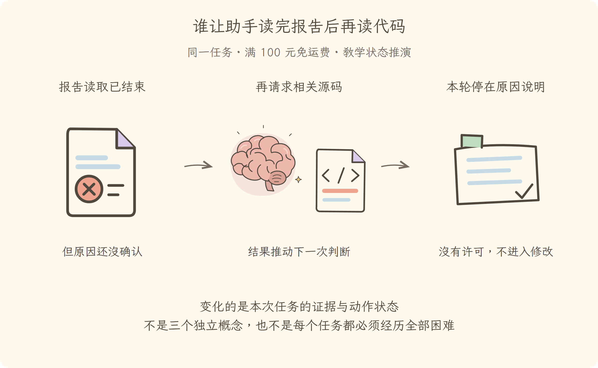

学习导航
第02讲 · 谁让助手读完报告后再读代码
源码基线：cd5ef8148158c3a752a658978873241fdf8e2bbc。业务案例为虚构 Java 运费服务；图与流程是教学推演，源码事实另有固定证据。
从这里接上
已有任务目标，但一次回答还不能完成排查。本讲要回答：谁让助手读完报告后再读代码？
上一讲解决了“形成读报告、读代码、申请修改、重跑测试的任务闭环”；这仍不能代替本讲要补的责任。
阅读与完成标准
先看逐步讲解，再做练习。视觉课件用于复习，词典随用随查，不要求先背英文。预计正文阅读 20–35 分钟，练习 10–20 分钟；这是安排建议，不是学会的证明。
读完应能解释：读报告的工具结束后，为什么还可能欠下一步？ 还要能预测：日志有一轮开始与结束，却没有模型步骤，一定损坏了吗？ 最后从源码证据定位相应责任。
现在必须懂的是本讲怎样改变证据或动作状态；具体框架中的其他选项知道存在即可，不用一次读完整个包。语法卡住可查补课 A、补课 B，工程定位查补课 C，看完返回此处即可。
本讲交接
读报告的结果触发下一次模型判断。但下一步还要解决：报告明明在磁盘，模型为什么仍不知道。
← 第01讲：任务全景 · 第03讲：模型请求 →
视觉课件
第02讲 · 谁让助手读完报告后再读代码
源码基线：cd5ef8148158c3a752a658978873241fdf8e2bbc。业务案例为虚构 Java 运费服务；图与流程是教学推演，源码事实另有固定证据。
当前现场
已有任务目标，但一次回答还不能完成排查。固定业务约定不变：满 10000 分免运费；原实现在等于时返回 800。禁止用修改预期的方式让测试变绿。

三分钟复述
先描述左格缺什么，再说明中格采取的机制，最后指出右格新增了哪些证据或责任。读报告的结果触发下一次模型判断。不要只读图上的物件名；删掉中间这项机制，任务会在哪一步失去依据？
本讲最容易误会的是：日志有一轮开始与结束，却没有模型步骤，一定损坏了吗？ 不一定。首次输入在请求前被拒绝或改为空，可以形成零步骤轮次；应核对对应分支。
从图返回源码
图只表达教学关联与状态变化，不代替完整调用顺序。源码定位提供实现或契约证据，正文解释映射和边界。
← 第01讲：任务全景 · 第03讲：模型请求 →
逐步讲解
第02讲 · 谁让助手读完报告后再读代码
源码基线：cd5ef8148158c3a752a658978873241fdf8e2bbc。业务案例为虚构 Java 运费服务；图与流程是教学推演，源码事实另有固定证据。
一、报告回来了，谁提醒模型接着看代码
第一讲得到一条失败报告：10000 分输入被收了 800 分。报告读取工具已经结束，可排查还没结束。如果程序只把工具输出显示给用户，然后退出，模型就没有机会结合结果提出“再读实现”的下一步。
Agent Loop（智能体循环）正是这位负责接力的调度者：准备一次模型输入，接收模型输出，执行其中受控的动作，再把结果带回下一次请求。它不是给模型增加一颗新大脑，而是让多次判断和真实反馈组成任务过程。
三格为同一运费任务的教学状态变化或故障对照。图不是实际运行日志；关键区别见各格说明。
二、别把一次请求、一步和一轮混成一个词
Step（一步）在本项目中是一回模型请求以及它调用的工具；Turn（一轮）可以包含零步或多步。可以把一轮想成接下一张排查工单，一步则是工单里“根据现有材料决定并尝试一个阶段动作”。
在教学推演里，第一步请求读取报告；结果说明是边界失败，于是第二步请求读取业务约定和实现；第三步解释原因并等待授权。用户随后授权修复，可能形成新的输入和后续轮次。这里没有规定真实模型一定用三步，它也可能合并独立读取或选择别的合法路径。
为什么一轮会有零步？因为系统先受理一项输入，再在请求前检查时拒绝它，或者把最初输入改为空。工单被登记过，却没有发生模型请求；日志仍应能解释这次尝试。
三、真正控制继续的是状态，不是一句“继续工作”
阅读源码前先做预测：若工具刚读回报告，调度者为什么不能在返回报告后立即把整轮判为完成？因为下一次判断仍需要消费结果。反过来，若没有欠下的工具反馈，也没有新的待处理输入，就不应无条件再请求模型。
以下是固定提交中的定位片段（连续原文；中文说明放在代码之外）：
let target: InboxTarget = 'next-turn'
try {
while (true) {
signal.throwIfAborted()
const step = phase.step + 1
const decision = await this.preStep(target, { turn, step })
if (decision.kind === 'reject') {
turnEnds = { kind: 'blocked' }
return false
}
if (turnEnds && decision.messages.length === 0) break
// A removed waking message or an enter decision rewritten to empty
// still owns the initial turn boundary, but it spends no model call.
if (phase.step === 0 && decision.messages.length === 0) {
turnEnds = { kind: 'completed' }
return false
}
signal.throwIfAborted()
this.session.append('step/start', { turn, step })
phase.step = step
try {
for (const message of decision.messages) {
this.session.append('user/message', message, { surfaceOp: 'append' })
}
// max-tokens is sticky: once any step hits the ceiling, later steps
// that complete normally must not downgrade the turn outcome.
const stepEnd = await this.step(decision.assembly, decision.startsRequestSeries === true)
// max-tokens stays sticky: a later completed step must not
// downgrade the turn outcome.
if (turnEnds === null || turnEnds.kind !== 'max-tokens') turnEnds = stepEnd
} finally {
this.session.append('step/end', { turn, step })
}
signal.throwIfAborted()
if (turnEnds && this.inbox.nextStep.length === 0) {
await this.dispatch.serial('agent/turn-stopping', { turn, signal })
signal.throwIfAborted()
}
if (turnEnds && this.inbox.nextStep.length === 0) break
target = 'next-step'
}
这段按顺序读 preStep、拒绝分支、step/start、step 和 nextStep。它们分别对应请求前准入、零步退出、开始记录、模型交互，以及下一步待处理材料。源码节选为连续片段，不展示全部异常处理；完整证据链接可继续往下看关闭轮次的部分。
常见误读是“循环里有一个无限循环，所以智能体会一直跑”。循环是否继续由状态与返回条件控制，和 Java 的服务消费循环一样，不能只看语法外形。
四、到达、入队和进入模型是三件事
Inbox（待处理输入队列）像工单旁的收件盘：有些消息会唤醒驱动，有些注入材料先放在盘里，等下一次请求真正领取。材料已到达系统，不表示它已进入这一步模型输入。
假设模型正在读源码，你又补充“只排查，不要修改”。这条边界必须通过系统输入与执行策略起作用，不能假设正在进行的模型请求会神奇地重算。对于本书练习，我们把修改权限放在执行器独立检查；消息用于帮助模型理解，权限检查用于阻止越界。
可以类比 Java 队列的入队和消费者取走，但模型请求的上下文准备、日志事件与取消传播是额外职责，不能简化为一个普通阻塞队列。
五、停止的原因决定我们能说什么
停止可能是正常完成、被阻止、取消、错误，或输出达到上限。它们都表现为“不再向前运行”，却不代表同一种业务结果。上限停止尤其不能在后续某一步正常结束后被改写成整体毫无限制地完成。
第一讲的任务还要保留更严格的业务判断：即使循环正常结束，助手仍可能没有测试或解释错误。因此运行结束是运行事实，业务验收要到第十六讲独立判断。
六、现在轮到检查模型究竟看见了什么
拿掉循环，报告结果无法推动下一次判断；有了循环，也仍可能一直猜错，因为每次输入里根本没放对材料。第三讲因此不再问“会不会继续”，而问“继续时，报告、源码和授权到底怎样成为模型请求”。
← 第01讲：任务全景 · 第03讲：模型请求 →
练习与答案
第02讲 · 谁让助手读完报告后再读代码
源码基线：cd5ef8148158c3a752a658978873241fdf8e2bbc。业务案例为虚构 Java 运费服务；图与流程是教学推演，源码事实另有固定证据。
先作答，再展开
1. 解释机制
读报告的工具结束后，为什么还可能欠下一步？
查看解释与边界
结果改变了可用证据，模型还需要基于它决定读源码或解释原因；结束工具不等于结束任务。
2. 预测反例
日志有一轮开始与结束，却没有模型步骤，一定损坏了吗？
查看推演
不一定。首次输入在请求前被拒绝或改为空，可以形成零步骤轮次；应核对对应分支。
3. 源码与图相互校验
打开本讲定位，找到正文强调的分支或契约。遮住图中文字，解释左、中、右三格分别表示什么；指出图省略了哪一项实现细节。
参考核对方式
图的顺序是：报告读取已结束（但原因还没确认）→再请求相关源码（结果推动下一次判断）→本轮停在原因说明（没有许可，不进入修改）。
沿 preStep 的拒绝与空输入分支，再看 this.step 和 inbox.nextStep。前者决定是否花一次模型调用，后者参与继续条件；图省略了取消和输出上限等停止原因。
← 第01讲：任务全景 · 第03讲：模型请求 →
分享稿
第02讲 · 谁让助手读完报告后再读代码
源码基线：cd5ef8148158c3a752a658978873241fdf8e2bbc。业务案例为虚构 Java 运费服务；图与流程是教学推演，源码事实另有固定证据。
用自己的话讲给同事
我们还在查同一个 Java 运费问题：满 100 元应免运费，恰好边界却收了 8 元。走到本讲，已有条件是：已有任务目标，但一次回答还不能完成排查。
如果不补这一层，会遇到的问题是：读报告的工具结束后，为什么还可能欠下一步？ 结果改变了可用证据，模型还需要基于它决定读源码或解释原因；结束工具不等于结束任务。 所以本讲新增的不是要背的名词，而是任务中一项明确的责任。
现在能做到：读报告的结果触发下一次模型判断。但还要守住反例：日志有一轮开始与结束，却没有模型步骤，一定损坏了吗？ 不一定。首次输入在请求前被拒绝或改为空，可以形成零步骤轮次；应核对对应分支。
请结合本讲图说出变化，再指向源码；不要宣称这段教学推演就是实际模型日志。下一讲顺着“报告明明在磁盘，模型为什么仍不知道”继续。
术语词典
第02讲 · 谁让助手读完报告后再读代码
源码基线：cd5ef8148158c3a752a658978873241fdf8e2bbc。业务案例为虚构 Java 运费服务；图与流程是教学推演，源码事实另有固定证据。
词典用于回查，正文在首次使用处解释。代码、参数与路径保留原拼写；产品名称不逐字翻译。模型上下文和插件上下文不是一回事。
Agent Loop（智能体循环）
反复准备输入、调用模型、处理工具请求并决定下一步的驱动。像接力调度员：报告回来后再安排读源码。循环可以被拒绝、取消或结束，不等于无限重试。
Step（一步）
本项目的一次模型请求及其工具调用。像排查中的一次问答交接；一个步骤可能请求多个工具，不一定只读一个文件。
Turn（一轮）
一次由驱动组织的轮次，可以包含零个或多个步骤。像接手一轮工单处理；材料被拒绝时可能一步都没执行，也不等于整个业务任务已经完工。
Inbox（待处理输入队列）
等待被驱动领取的输入队列，像工作台的收件盘。材料入盘和真正进入模型请求是两个时点，不是消息送来就自动被模型看见。
核对来源
本讲源码定位与完整正文。本例报告和金额属于教学夹具，不来自这份上游源码。